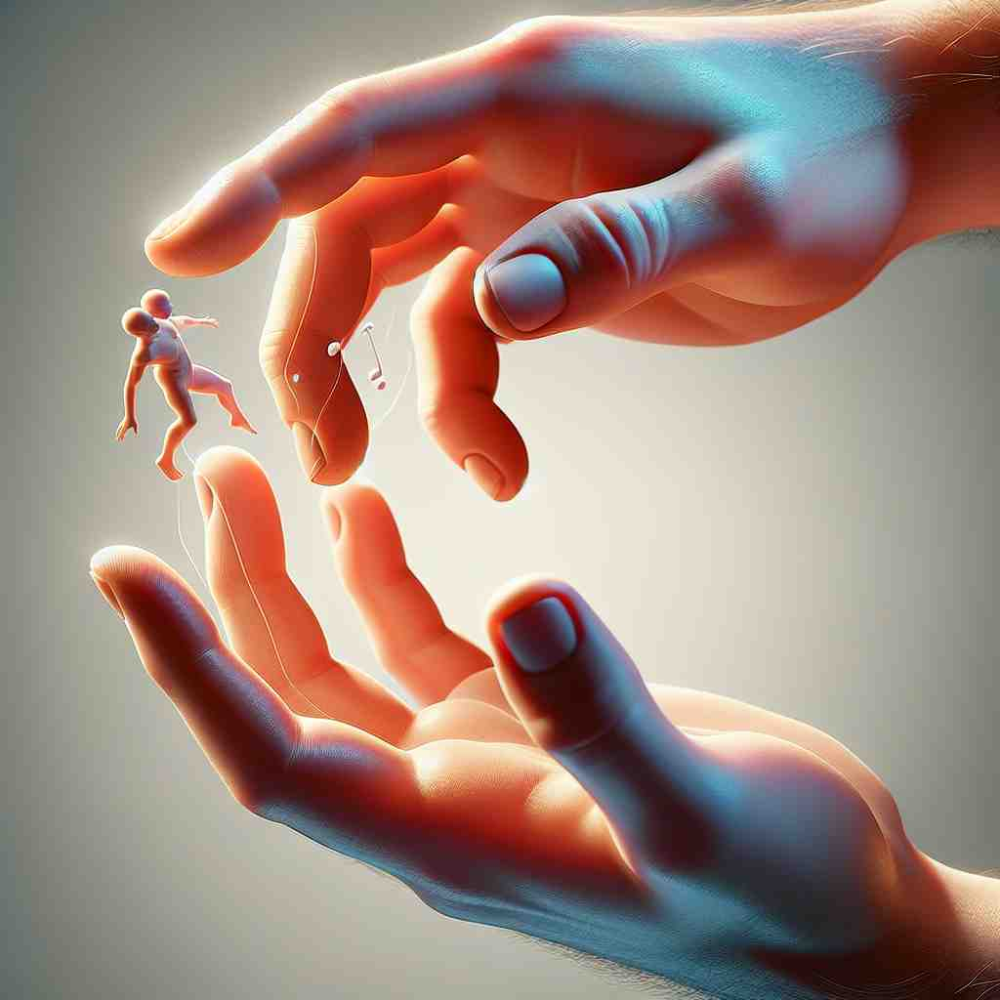
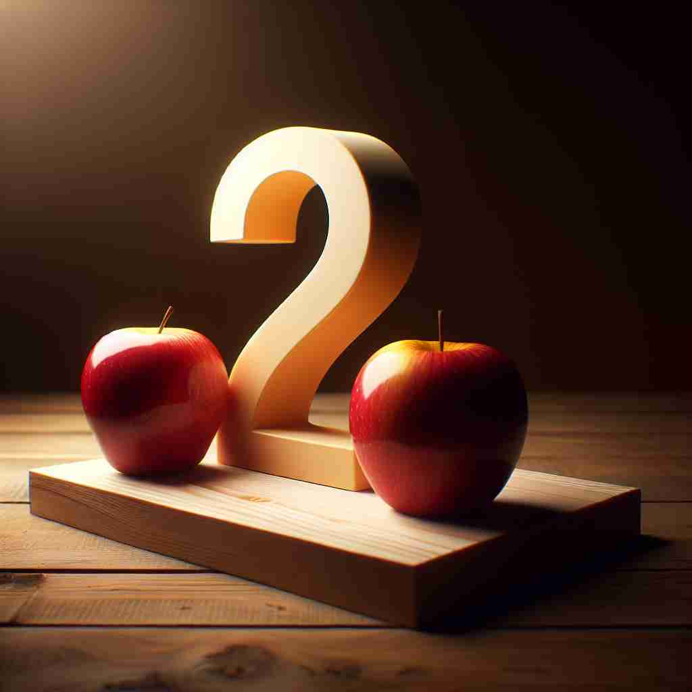

💬 The child is two years old today.

💬 I see two apples on the table.

💬 The artist carefully painted two hands holding a tiny figure.

💬 I have two apples on the table.
🔈 [tuː]
🗝️ n./adj. the number 2
🖼️ 在一个阳光灿烂的公园里，两个孩子正在数他们手中的五彩气球。一个孩子开心地数到：'One, two!' 他们一起微笑，展示了'two'作为数字2的简单明了。
🔍 记忆'two'的关键在于始终围绕'2'这个核心概念。无论是表示数量、成对的事物、双方关系，还是具有两个部分的特性，都源于这个基本数字。想象一个分叉的树枝，每个分支都代表'two'的一种用法，这样可以更容易理解和记忆它的多重含义。
💬 The child is two years old today.
💬 I see two apples on the table.
💬 The artist carefully painted two hands holding a tiny figure.
💬 I have two apples on the table.
🌳 该单词是数字词，没有词根、前缀或后缀的构成，是一个基础词汇。
💡 可以通过 'two' 这个词的发音, 回忆到其中的 'tw-' 表示 '二'，与 '双'、'两次' 等概念相联系，帮助记忆相关的数字词汇。
🗝️ n. a pair or couple
🖼️ 在一个浪漫的餐厅中，一对情侣坐在桌旁，分享一份甜美的巧克力蛋糕。餐厅里烛光摇曳，他们的脸上洋溢着幸福，体现了'two'作为一对伴侣的含义。
💬 The two of us have been friends for years.
❓ 由基本数字概念扩展到表示一对事物
🗝️ adj. emphasizing the relationship between two people or things
🖼️ 在一个团队合作的工作坊上，两名同事正专心合作制作一个项目。他们通过无声的默契眼神交流，展示了'two'在强调两者关系时的力量。
💬 It takes two to tango.
❓ 强调两个人或物之间的关系
🗝️ adj. having two parts, sides, or types
🖼️ 在一个繁忙的市场里，商贩正在展示一个新颖的背包。这个背包设计独特，分为内外两个存储空间，展示了'two'作为具有双重部分的对象。
💬 A two-way street allows traffic in both directions.
❓ 从数量概念延伸到描述具有两个部分或方面的事物
🗝️ adj. divided into two
🖼️ 在一个热闹的游戏派对中，主持人宣布：'现在我们分成两组！' 所有人自动分开，形成两个活力四射的团队，体现了'two'作为分成两半的含义。
💬 The cake was cut in two.
❓ 表示被分成两部分的状态